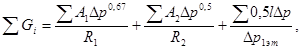
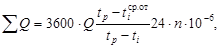
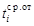
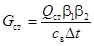
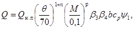
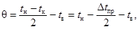
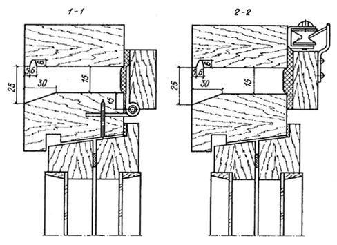

Центральный научно исследовательский
и проектно экспериментальный институт
инженерного оборудования городов, жилых и общественных зданий
(ЦНИИЭП инженерного оборудования) Госкомархитектуры
Справочное пособие к СНиП
Серия основана в 1989 году
ОТОПЛЕНИЕ И ВЕНТИЛЯЦИЯ ЖИЛЫХ ЗДАНИЙ
МОСКВА
СТРОЙИЗДАТ
1990
Рекомендовано к изданию секцией отопления, вентиляции и кондиционирования воздуха Научно-технического совета ЦНИИЭП инженерного оборудования Госкомархитектуры
Пособие разработано в соответствии со СНиП 2.08.01-89 Жилые здания. Установленные СНиПом параметры микроклимата в помещениях жилых домов и воздушно-тепловой режим определяются не только работой систем отопления и вентиляции, но и архитектурно-планировочными и конструктивными решениями этих зданий, а также теплофизическими характеристиками ограждающих конструкций. Кроме перечисленного, в жилых зданиях большое влияние на микроклимат оказывают особенности эксплуатации квартир жильцами. Совокупность этих факторов определяет эксплуатационные расходы теплоты и уровень воздушно-теплового комфорта. С учетом этого организация и рациональное поддержание воздушно-теплового режима в жилых зданиях является комплексной задачей. Однако действующая система нормативных документов, специализированная по отдельным разделам проектирования, не учитывает этой комплексности.
Проектирование систем отопления и вентиляции осуществляется в соответствии с требованиями СНиП 2.04.05-86. При этом используются справочные пособия к СНиПу, справочники, рекомендательная и другая литература, содержащая методы теплового и гидравлического расчета систем, указания по их конструированию, характеристики оборудования. Перечисленные документы, ориентированные на специалистов в области проектирования отопительно-вентиляционных систем, затрагивают далеко не весь комплекс вопросов обеспечения нормируемого воздушно-теплового режима в помещениях жилых зданий при минимальном расходе тепловой энергии. Поэтому при составлении настоящего Пособия основное внимание уделено вопросам, наиболее часто возникающим у проектировщиков и свидетельствующим не только о недостаточной четкости отдельных положений нормирования, но и отсутствии в ряде случаев понимания значимости различных элементов жилых зданий в их воздушно-тепловом режиме.
Пособие разработано ЦНИИЭП инженерного оборудования Госкомархитектуры (кандидаты техн. наук А.З. Ивянский и И.Б. Павлинова).
1.1. Воздушно-тепловой режим в помещениях является одним из основных факторов, определяющих уровень комфорта жилых зданий. Неудовлетворительный микроклимат делает их непригодными для проживания.
1.2. Оптимизация воздушно-теплового режима квартир требует их изоляции от смежных помещений с целью максимального сокращения количества перетекающего воздуха.
Перетекание воздуха в квартиры из смежных квартир и (или) лестничной клетки является одной из основных причин, снижающих эффективность работы системы вентиляции и приводящих к неудовлетворительному состоянию воздушной среды в квартирах. С учетом этого в строительной части проекта жилого здания должны быть предусмотрены планировочные, конструктивные и технологические решения, максимально сокращающие возможность перетекания воздуха через входные двери в квартиры, места сопряжений ограждающих конструкций, прохождения через них инженерных коммуникаций и др.
1.3. Как показывает опыт эксплуатации современных жилых зданий массовой застройки, одной из самых распространенных причин недогрева помещений при расчетной теплоотдаче системы отопления является фактическое занижение сопротивления воздухопроницанию оконного заполнения против регламентированного СНиП II-3-79** для предусмотренной проектом конструкции окон. Это занижение имеет место вследствие низкого качества изготовления оконных блоков; некачественной заделки оконных блоков в стеновую панель; отсутствия уплотняющих притворы прокладок или их несоответствия проектным и т.п.
Для исключения недогрева помещений жилых домов при низких температурах наружного воздуха в результате отмеченного выше фактора рекомендуется проводить выборочные натурные испытания окон с целью определения их фактического сопротивления воздухопроницанию, характерного для конкретного района застройки, например по методике натурных испытаний воздухообмена жилых домов ЦНИИЭП инженерного оборудования.
1.4. Размеры световых проемов определяют не только расчетные теплопотери помещений, но и тепловой режим в них за счет отрицательной радиации и ниспадающих потоков холодного воздуха в зимний период и перегрева - в летний. Поэтому следует стремиться к минимально допустимым размерам световых проемов из условий естественного освещения, но не более чем при соотношении их площади к площади пола соответствующих помещений 1:5,5.
1.5. При выборе конструктивного решения чердаков преимущество следует отдавать посекционным теплым чердакам, используемым в качестве камеры статического давления системы естественной вытяжной вентиляции. Открытые чердаки с выпуском в них вытяжного воздуха требуют дальнейших исследований и конструктивного совершенствования, и для использования в массовом жилищном строительстве в настоящее время не рекомендуются. В зданиях высотой менее 5 этажей, в которых устройство теплого чердака нецелесообразно, вытяжные каналы должны непосредственно выходить в шахты, выводимые выше уровня кровли.
1.6. Зонирование квартир сопряжено с увеличением количества инженерных коммуникаций, что приводит к возрастанию материалоемкости и эксплуатационных затрат. Наличие вытяжных каналов в разных местах квартиры существенно снижает надежность и эффективность системы естественной вытяжной вентиляции.
1.7. Примыкание санитарных узлов и вентблоков к наружным стенам квартир затрудняет обеспечение удовлетворительного влажностного режима в санитарных помещениях и требует специальных решений по повышению температуры их ограждений, которые подлежат разработке и проверке в массовом строительстве.
1.8. Планировочные решения квартир с точки зрения организации вентиляции преимущественно должны быть направлены на исключение горизонтальных воздуховодов в пределах квартиры; на обеспечение непосредственного поступления воздуха из кухни, ванной и туалета в вентблок; на обеспечение доступа к вентблокам при монтаже, а также для ревизии и герметизации стыков при эксплуатации.
1.9. В подвалах и цокольных этажах квартирных домов и общежитий с системами отопления, подключаемыми к сетям централизованного теплоснабжения, при расчетных теплопотерях зданий за отопительный период 1000 ГДж и более следует предусматривать помещение для размещения индивидуального теплового пункта (ИТП).
Помещение ИТП должно иметь высоту (в чистоте) не менее 2,2 м, в местах прохода к нему обслуживающего персонала - не менее 1,9 м; должно быть отделено от других помещений, иметь открывающуюся наружу дверь, освещение. Пол должен иметь бетонное или плиточное покрытие с уклоном 0,005. В полу ИТП следует устанавливать трап, а при невозможности самотечного отвода воды устраивать водосборный приямок размерами 0,5´0,5´0,8 м, перекрываемый съемной решеткой. Для откачки воды из приямка в систему канализации следует устанавливать дренажный насос.
Расчетные теплопотери здания за отопительный период рекомендуется определять в соответствии с разд. 2 настоящего Пособия.
1.10. Применение кухонь-ниш с механической вытяжной вентиляцией допускается только в жилых зданиях, все квартиры которых оборудованы механической вытяжкой.
1.11. Устройство лоджий с поэтажными выходами из лестничной клетки сопряжено с существенным дополнительным расходом теплоты и не рекомендуется, если это не связано с противопожарными требованиями.
1.12. При технико-экономическом обосновании конструктивного решения чердака, кроме традиционных факторов, следует учитывать также затраты на изоляцию размещенных в них инженерных коммуникаций и на их эксплуатацию.
2.1. Расчетные потери теплоты, возмещаемые отоплением, следует определять из теплового баланса. Тепловой баланс жилого здания в целом и каждого отапливаемого помещения находят из уравнения
Qтр + Qв + Qc.о + Qинс + Qбыт = 0, (1)
где Qтр - трансмиссионные потери теплоты через ограждения здания (помещения); Qв - затраты теплоты на нагрев наружного воздуха в объеме инфильтрации или санитарной нормы; Qс.о - тепловая мощность системы отопления, которая является искомой величиной при определении теплового баланса; Qинс - теплопоступления за счет солнечной радиации; Qбыт - суммарные теплопоступления за счет всех внутренних источников теплоты, за исключением системы отопления (к бытовым условно относятся тепловыделения от электробытовых и осветительных приборов, кухонных плит, разводки трубопроводов горячего водоснабжения и непосредственно потребляемой горячей воды, людей, находящихся в квартире).
2.2. Расчет трансмиссионных теплопотерь через наружные ограждающие конструкции производится по прил. 8, СНиП 2.04.05-86. При этом расчетные температуры воздуха помещений tрасч принимаются в соответствии со СНиП 2.08.01-89 Жилые здания.
2.3. При расчете трансмиссионных теплопотерь через внутренние ограждения жилых домов следует учитывать теплопередачу:
а) через чердачные перекрытия в домах с теплым чердаком;
б) через перекрытия над неотапливаемыми подвалами и подпольями (в том числе при размещении в них теплопроводов);
в) через внутренние ограждения лестничной клетки (в том числе незадымляемой).
При этом коэффициент п принимают равным 1.
Температуру воздуха в подвалах (подпольях) и теплых чердаках следует определять из теплового баланса этих помещений (при составлении теплового баланса теплого чердака могут быть использованы Рекомендации по проектированию железобетонных крыш с теплым чердаком для многоэтажных жилых зданий/ЦНИИЭП жилища, 1986).
После определения температуры воздуха по пп. а и б при заданных строительных конструкциях следует проверить соблюдение нормируемой величины Dtн по табл. 2 СНиП II-3-79** Строительная теплотехника.
В лестничных клетках домов с квартирным отоплением расчетная температура воздуха не нормируется.
2.4. Расход теплоты на нагрев поступающего в помещения наружного воздуха определяется дважды:
а) исходя из количества инфильтрующегося через неплотности наружных ограждений воздуха;
б) исходя из санитарной нормы вентиляционного воздуха 3 м3/ч на 1 м2 площади пола жилых комнат.
Для жилых комнат из двух полученных величин принимают большую, для кухонь - по п. а.
2.5. Расход теплоты Qi, Вт, на нагрев инфильтрующегося воздуха определяют по формуле
Qi = 0,28 SGikic(tp - ti), (2)
где Gi - количество инфильтрующегося воздуха, кг/ч, через ограждение помещения, определяемое по формуле (4); с - удельная теплоемкость воздуха, равная 1 КДж/(кг×°С); ki - коэффициент учета влияния встречного теплового потока в конструкциях принимается по прил. 9 к СНиП 2.04.05-86; tp, ti - расчетные температуры воздуха, °С, в помещении и наружного воздуха в холодный период года (параметры Б).
Расчет расхода тепла на нагрев инфильтрующегося воздуха для всех помещений жилых зданий (в том числе лестничных клеток, лифтовых холлов, поэтажных коридоров), учитывающий обобщенные результаты натурных испытаний различных элементов ограждений на воздухопроницаемость и результаты машинного счета (в табличной форме), можно осуществлять по материалам ЦНИИЭП инженерного оборудования.
2.6. Расход теплоты Qв, Вт, на нагрев санитарной нормы вентиляционного воздуха определяют по формуле
Qв = (tp - ti) Ап, (3)
где Aп - площадь пола жилого помещения, м2.
2.7. Количество инфильтрующегося в помещение воздуха SGi, кг/ч, следует определять по формуле*
* Интерпретация формулы (3) прил. 9 СНиП 2.04.05-86 для жилых зданий.

где A1, А2 - площади соответственно окон (балконных дверей) и наружных дверей, м2, l - длина стыков стеновых панелей, м; R1 и R2 - сопротивление воздухопроницанию соответственно окон (м2×ч (даПа)2/3/кг) и дверей (м2×ч (даПа)0,5/кг); определяют по СНиП II-3-79** (прил. 10) и СНиП 2.04.05-86 (прил. 9) или по результатам натурных испытаний; Dp - расчетная разность давлений на наружной и внутренней поверхностях наружных ограждений помещения, даПа; Dp1эт - разность давлений Dp, определенная для помещений 1-го этажа, даПа.
2.8. Для жилых зданий с естественной вытяжной вентиляцией расчетную разность давлений Dр находят по формуле*
Dр = (Нш - hi) (ri - 1,27) + 0,05 ri v2 (сl, и ki - сl, п kш), (5)
где Нш - высота устья шахты от уровня земли, м; hi - высота от уровня земли до центра рассчитываемого помещения, м; v - скорость ветра, принимаемая по прил. 7 и в соответствии с п. 3.2 СНиП 2.04.05-86, м/с; ri - плотность наружного воздуха, кг/м3, которую определяют по формуле
* Интерпретация формулы (4) прил. 9 СНиП 2.04.05-86 для жилых зданий.
ri = 353/(273 + ti), (6)
где ti - температура наружного воздуха по параметрам Б или А (см. п. 3.2 СНиП 2.04.05-86), °С; сl, и и сl, п - аэродинамические коэффициенты соответственно для наветренной и подветренной поверхностей ограждений здания, принимают в соответствии со СНиП 2.01.07-85 равными +0,8 и -0,6; ki и kш - коэффициенты учета изменения скоростного давления ветра в зависимости от высоты; принимают соответственно для рассчитываемого элемента и устья шахты по СНиП 2.01.07-85.
В формуле (5) учтены потери давления в вентканалах при нормируемом расходе удаляемого воздуха.
2.9. В соответствии с п. 3.1 СНиП 2.04.05-86 бытовые тепловыделения Qбыт следует учитывать для жилых комнат и кухонь в размере 21 Вт на 1 м2 площади пола.
2.10. Теплопоступления за счет солнечной радиации Qинс не рекомендуется учитывать в тепловом балансе при определении расчетной нагрузки системы отопления. Перегрев помещений за счет инсоляции следует снимать путем пофасадного регулирования систем отопления (см. разд. 3).
2.11. Расход теплоты, ГДж, за отопительный период SQ находят из выражения

где Q - расчетный расход теплоты отапливаемым зданием (фасадом); tp - расчетная температура внутреннего воздуха, °С; - средняя за отопительный период температура наружного воздуха, °С, принимаемая по СНиП 2.01.01-82; ti - расчетная температура наружного воздуха (параметры Б), °С; п - количество дней отопительного сезона (продолжительность периода со средней суточной температурой воздуха £ 8 °С), принимаемое по СНиП 2.01.01-82.
С достаточной степенью точности можно принимать
(tp - 
2.12. В связи с переходом с 01.01.88 на расчет вентиляционной составляющей теплопотерь с параметров наружного воздуха А на параметры Б впредь до утверждения новых контрольных показателей расхода теплоты на отопление жилых зданий рекомендуется принимать ранее утвержденные Госгражданстроем контрольные показатели с повышающим коэффициентом 1,15.
2.13. При определении удельных тепловых характеристик жилых зданий общая площадь принимается как сумма площадей отапливаемых помещений.
3.1. Тепловой поток системы отопления в расчетном режиме должен создавать в помещениях температуры воздуха, нормируемые СНиП 2.08.01-89 Жилые здания. При температуре наружного воздуха выше параметров Б автоматизированные системы отопления должны обеспечивать в помещениях квартир жилых зданий допустимые температуры воздуха в пределах, регламентируемых прил. 1, СНиП 2.04.05-86.
Тепловой поток системы отопления во всех случаях больше расчетных теплопотерь отапливаемого здания из-за неизбежного завышения поверхностей принимаемых к установке отопительных приборов (за счет округления их до ближайшего типоразмера или целого числа секций), теплоотдачи трубопроводов в неотапливаемых помещениях, увеличенных теплопотерь «зарадиаторными» участками наружных ограждений. В проектах, наряду с расчетными теплопотерями зданий, следует указывать величину теплового потока системы отопления.
Тепловой поток системы отопления Qc.o, кВт, следует определять по формуле
Qc.o = Qт.пb1b2 + Qд, (8)
где Qт.п - расчетные теплопотери отапливаемого здания, кВт; b1 - коэффициент, учитывающий теплоотдачу дополнительной площади принимаемых к установке отопительных приборов за счет округления сверх расчетной площади, определяют по следующим значениям:
Шаг номенклатурного ряда
отопительных приборов, кВт 0,12; 0,15; 0,18; 0,21; 0,24
Значение коэффициента b1 1,02; 1,03; 1,04; 1,06; 1,08
b2 - коэффициент, учитывающий дополнительные теплопотери из-за размещения отопительных приборов у наружных ограждений, принимаемый по табл. 1;
Таблица 1
|
Отопительный прибор |
||||
|
радиатор |
конвектор |
|||
|
чугунный секционный |
стальной панельный |
с кожухом |
без кожуха |
|
|
b2 |
1,02 |
1,04 |
1,02 |
1,03 |
Qд - дополнительные потери теплоты, связанные с остыванием теплоносителя в подающих и обратных магистралях, проходящих в неотапливаемых помещениях, кВт. Величину Qд рекомендуется определять при коэффициенте эффективности, изоляции 0,75, по табл. 2.
Таблица 2
|
tг - tв* |
Теплопередача 1 м изолированной трубы, Вт/м, при условном диаметре, мм |
||||||||||
|
15 |
20 |
25 |
32 |
40 |
50 |
70 |
80 |
100 |
125 |
150 |
|
|
50 |
13 |
16 |
20 |
24 |
27 |
33 |
40 |
45 |
53 |
65 |
76 |
|
55 |
15 |
19 |
22 |
27 |
30 |
36 |
45 |
51 |
60 |
73 |
86 |
|
60 |
16 |
20 |
24 |
30 |
34 |
41 |
50 |
57 |
67 |
85 |
95 |
|
65 |
19 |
22 |
27 |
34 |
37 |
45 |
56 |
63 |
76 |
91 |
106 |
|
70 |
21 |
24 |
30 |
36 |
41 |
50 |
60 |
70 |
82 |
100 |
116 |
|
75 |
22 |
27 |
33 |
39 |
44 |
55 |
66 |
76 |
89 |
109 |
127 |
|
80 |
24 |
29 |
35 |
43 |
48 |
58 |
72 |
81 |
98 |
119 |
137 |
|
85 |
26 |
31 |
36 |
46 |
52 |
63 |
78 |
88 |
106 |
127 |
148 |
|
90 |
28 |
34 |
41 |
50 |
56 |
67 |
84 |
95 |
113 |
137 |
159 |
|
95 |
30 |
36 |
43 |
53 |
59 |
72 |
89 |
101 |
121 |
146 |
170 |
|
100 |
31 |
38 |
46 |
57 |
64 |
78 |
95 |
108 |
129 |
156 |
181 |
|
105 |
34 |
42 |
50 |
60 |
67 |
83 |
101 |
115 |
137 |
166 |
193 |
|
110 |
36 |
44 |
52 |
65 |
72 |
87 |
108 |
122 |
145 |
177 |
205 |
|
115 |
38 |
46 |
56 |
69 |
77 |
92 |
114 |
129 |
155 |
186 |
216 |
|
120 |
41 |
49 |
58 |
72 |
80 |
98 |
120 |
136 |
163 |
196 |
229 |
|
125 |
42 |
51 |
62 |
76 |
85 |
102 |
127 |
144 |
171 |
207 |
241 |
|
130 |
44 |
53 |
65 |
80 |
88 |
108 |
132 |
151 |
180 |
217 |
252 |
|
135 |
47 |
57 |
67 |
84 |
93 |
113 |
139 |
158 |
188 |
228 |
265 |
|
140 |
49 |
59 |
71 |
87 |
98 |
119 |
145 |
165 |
198 |
238 |
278 |
|
* tг - температура теплоносителя на входе в систему отопления (для подающих трубопроводов) или на выходе из нее (для обратных трубопроводов), °С; tв - температура воздуха помещений, в которых проложены трубопроводы, °С; определяют по тепловому балансу этих помещений (см. разд. 2). |
|||||||||||
3.2. Расчетный расход теплоносителя в стояках (ветвях) системы отопления Gст, кг/ч, следует определять по формуле

где Qст - суммарные теплопотери помещений, обслуживаемых стояком (ветвью) системы отопления, кВт; св - удельная теплоемкость воды, кДж/(кг×°С); Dt - разность температур теплоносителя на входе и выходе из стояка (ветви). При предварительном расчете Dt рекомендуется принимать на 1 °С меньше расчетного перепада температур теплоносителя в системе отопления.
3.3. Тепловой поток Q отопительного прибора определяют по формуле

где Qн.п - номинальный тепловой поток отопительного прибора, кВт; п и р - показатели степени соответственно при относительных температурном напоре и расходе теплоносителя; b3 - безразмерный коэффициент, учитывающий число секций в радиаторе (только для чугунных секционных радиаторов); b4 - безразмерный коэффициент, учитывающий способ установки отопительного прибора; b - безразмерный коэффициент на расчетное атмосферное давление; ср - поправочный коэффициент, учитывающий схему присоединения отопительного прибора и изменение показателя степени р в различных диапазонах расхода воды; y1 - коэффициент, учитывающий уменьшение теплового потока при движении теплоносителя по схеме «снизу-вверх»; М - расход воды через отопительный прибор (для конвекторов - по каждой трубке), кг/с; q - температурный напор, °С.

где tн и tк - температура теплоносителя на входе и выходе из отопительного прибора, °С; Dtпр - перепад температур теплоносителя на входе и выходе из отопительного прибора, °С; tв - расчетная температура воздуха отапливаемого помещения, °С.
Значения Qн.п, п, р, b3, b, ср, y1 следует принимать по информационным выпускам институтов Минстройматериалов СССР, справочникам, каталогам и др.
Для наиболее массовых отопительных приборов необходимая информация содержится в следующей литературе:
Рекомендации по теплогидравлическому расчету, монтажу и эксплуатации однотрубных вертикальных систем водяного отопления с настенными конвекторами «Комфорт 20»/ЦНИИЭП жилища, 1980;
Рекомендации по теплогидравлическому расчету, монтажу и эксплуатации систем водяного отопления с настенными конвекторами без кожухов типов «Аккорд» и «Север»/НИИ сантехники, 1983;
Рекомендации по теплогидравлическому расчету, монтажу и эксплуатации систем водяного отопления со стальными конвекторами типа «Универсал» и секционными чугунными радиаторами типа МС/НИИ сантехники, 1986;
Методика определения номинального теплового потока отопительных приборов при теплоносителе воде/НИИ сантехники, 1984.
3.4. Соотношение эквивалентных квадратных метров (экм) и киловатт рекомендуется принимать:
для радиаторов и конвекторов без кожуха 1 экм - 0,56 кВт,
для конвекторов с кожухом 1 экм - 0,57 кВт.
Номинальный тепловой поток отопительных приборов в кВт определен при разности средних температур теплоносителя и воздуха 70 °С, расходе теплоносителя через прибор 0,1 кг/с, атмосферном давлении 1013 ГПа.
Фактический тепловой поток от отопительных приборов в системе отопления в зависимости от значений перечисленных факторов будет отличаться от номинального в большую или меньшую сторону. В результате между теплопотерями помещений и номинальным тепловым потоком устанавливаемых в них отопительных приборов отсутствует формальное соответствие в киловаттах (например, в помещении с потерями теплоты 1 кВт по расчету должен быть установлен отопительный прибор с номинальным тепловым потоком 1,3 кВт), что является дефектом нового измерителя отопительных приборов, а не ошибками расчета.
3.5. Системы отопления жилых зданий при расходе теплоты за отопительный период (см. п. 2.12 настоящего Пособия) 1000 ГДж и более следует проектировать пофасадными для возможности автоматического раздельного регулирования каждого фасада. При расходе теплоты за отопительный период меньше 1000 ГДж (240 Гкал) автоматическое регулирование теплового потока предусматривается при обосновании.
3.6. Автоматическое регулирование расхода теплоты в системах отопления следует проектировать, руководствуясь «Общими положениями по оснащению приборами учета и автоматического регулирования систем газоснабжения, отопления, вентиляции, горячего водоснабжения, тепловых сетей и котельных», утвержденными постановлением Госстроя СССР.
При проектировании рекомендуется использовать Рекомендации по применению средств автоматического регулирования систем отопления и горячего водоснабжения жилых зданий/ЦНИИЭП инженерного оборудования, 1987.
С 1989 г. Московским заводом тепловой автоматики Минприбора СССР начат выпуск микропроцессорных регуляторов «Теплар-110», предназначенных для регулирования двух пофасадных систем отопления и системы горячего водоснабжения жилых домов (одним прибором). «Теплар-110» является наиболее эффективным специализированным регулятором.
3.7. Датчики температуры внутреннего воздуха при автоматизации систем отопления следует устанавливать в воздушном потоке в центре магистральных каналов вентиляционных блоков (при раздельных вентблоках - кухонных) на 700 - 800 мм ниже места слияния канала-спутника со сборным каналом в вентблоке верхнего этажа. При пофасадном регулировании для размещения датчиков рекомендуется использовать вентблоки квартир, помещения которых ориентированы преимущественно на один фасад здания. В домах меридиональной ориентации рекомендуется устанавливать не менее одного датчика в вентблоке квартиры, примыкающей к северному торцу здания. В остальных случаях следует стремиться к минимальной длине соединительных линий датчиков с регулирующими приборами.
3.8. Для многоэтажных жилых зданий основным решением отопления являются однотрубные водяные системы отопления из унифицированных узлов и деталей, с верхним или нижним розливом и искусственным побуждением циркуляции. Для зданий высотой до 10 этажей включительно могут быть использованы однотрубные системы с П (Т)-образными стояками. Параметры теплоносителя в системах водяного отопления следует принимать 105 - 70 °С, при необеспеченности указанных параметров источниками теплоты (индивидуальные или групповые котельные) - 95 - 70 °С.
В качестве отопительных приборов предпочтительны чугунные секционные радиаторы типа МС и стальные конвекторы типа «Универсал», которые обеспечивают регулирование теплового потока «по воздуху» за счет включенного в их конструкцию воздушного клапана, что позволяет не устанавливать перед ними регулировочные краны.
3.9. Системы панельного отопления с нагревательными элементами в однослойных и трехслойных наружных стеновых панелях по сравнению с традиционными системами центрального отопления являются прогрессивным техническим решением, которое при качественном исполнении позволяет повысить индустриальность монтажных работ, удешевить строительство и сократить расход металла при высоком уровне теплового комфорта в обслуживаемых помещениях.
Наряду с этим следует учитывать, что характерный для систем панельного отопления большой объем «скрытых» работ предъявляет повышенные требования к культуре производства и соблюдению технологической дисциплины. В аварийных ситуациях большого масштаба системы панельного отопления требуют более четких действий обслуживающего персонала. В связи с этим решения о применении систем панельного отопления в конкретных городах (районах) принимаются госстроями союзных республик, обл(гор)исполкомами с учетом подготовленности домостроительных комбинатов, теплоснабжающих и эксплуатирующих организаций.
При проектировании систем панельного отопления могут быть использованы «Указания по проектированию и осуществлению систем панельного отопления со стальными нагревательными элементами в наружных стенах крупнопанельных зданий» (СН 398-69) с изменениями, вытекающими из действующих нормативных документов.
3.10. В жилых зданиях, присоединяемых к сетям централизованного теплоснабжения с расчетной температурой теплоносителя (воды) 150 °С при параметрах Б наружного воздуха и гарантированным перепадом давления, может быть использовано система со ступенчатой регенерацией теплоты (СРТ), позволяющая сокращать расход отопительных приборов.
Проектирование системы СРТ осуществляется в соответствии с «Нормами проектирования систем отопления со ступенчатой регенерацией тепла» (РСН 308-85 Госстрой УССР).
3.11. При проектировании систем отопления жилых зданий, возводимых в Северной строительно-климатической зоне, в развитие действующих нормативных документов дополнительно рекомендуется:
а) системы отопления с местными отопительными приборами проектировать с тупиковой разводкой магистральных трубопроводов при числе стояков, присоединяемых к одной ветви, не более 6. При большем числе стояков предусматривать, как правило, попутное движение теплоносителя;
б) для отопления лестничных клеток предусматривать:
высокие стальные конвекторы в вестибюлях, предвключая их системе отопления, с установкой на обеих подводках в местах, недоступных для случайного закрывания запорной арматуры. Нагрузку высоких конвекторов следует принимать равной теплопотерям вестибюля с учетом теплопотерь через входные двери;
стальные конвекторы на этажах, присоединяя их к самостоятельным стоякам по однотрубной проточной схеме. Стояки лестничных клеток в пределах 1 - 2 этажей прокладывать в квартирах, лифтовых холлах или других помещениях, отапливаемых основной системой отопления зданий. Расчетную температуру воздуха в лестничных клетках принимать 18 °С;
в) отопление мусоросборных камер предусматривать, как правило, змеевиками из гладких труб, присоединяемыми к системе отопления по проточной схеме, с установкой запорной арматуры на обеих подводках. Расчетную температуру воздуха в мусоросборной камере принимать 15 °С;
г) неучтенные потери циркуляционного давления в системе отопления принимать равными 25 % максимальных потерь давления;
д) при установке в системах отопления подмешивающих насосов предусматривать резервный насос;
е) в системах отопления жилых зданий с числом этажей 3 и более на каждом стояке предусматривать запорную арматуру для их отключения и спускные краны со штуцером для опорожнения;
ж) прокладывать стояки в местах пересечения перекрытий с использованием гильз;
з) для стояков и подводок к отопительным приборам применять стальные обыкновенные трубы по ГОСТ 3262-75*.
Все изложенное направлено на повышение надежности систем отопления, сооружаемых в Северной строительно-климатической зоне и отражает опыт натурных обследований.
4.1. В массовом жилищном строительстве принята следующая схема вентилирования квартир: отработанный воздух удаляется непосредственно из зоны его наибольшего загрязнения, т.е. из кухни и санитарных помещений, посредством естественной вытяжной канальной вентиляции. Его замещение происходит за счет наружного воздуха, поступающего через неплотности наружных ограждений (главным образом оконного заполнения) всех помещений квартиры и нагреваемого системой отопления. Таким образом обеспечивается воздухообмен во всем ее объеме.
При посемейном заселении квартир, на которое ориентировано современное жилищное строительство, внутриквартирные двери, как правило, открыты или имеют подрезку дверного полотна, уменьшающую их аэродинамическое сопротивление в закрытом положении. Так, например, щель под дверями ванной и уборной должна быть не менее 0,02 м высотой.
Квартира рассматривается в качестве единого воздушного объема с одинаковым давлением.
Нормирование воздухообмена производят исходя из минимально необходимого по гигиеническим требованиям количества наружного воздуха на одного человека (примерно 30 м3/ч) и к площади пола относят условно. Возрастание нормы заселения, равно как и увеличение высоты помещений, с указанным количеством воздуха не связано.
Удалять воздух непосредственно из комнат в многокомнатных квартирах не рекомендуется, так как при этом нарушается схема направленного движения воздуха в квартире.
4.2. СНиП «Жилые здания» регламентирует двоякий подход к расчетному воздухообмену: жилых комнат - 3 м3/ч на 1 м2 пола; кухонь и санузлов - от 110 до 140 м3/ч (в зависимости от типа кухонных плит). Первая из этих величин учитывается в тепловом балансе (см. разд. 2), вторая - при расчете вентиляционных блоков. Различие в подходе к нормированию не имеет физического обоснования. В связи с этим рекомендуется: для квартир с жилой площадью менее 37 м2 (при электроплитах) и 47 м2 (при газовых плитах) производительность вытяжной вентиляции принимать исходя из нормы санузлов и кухонь; для квартир с жилой площадью 37(47) м2 и более - по санитарной норме для жилых комнат. Приведенные площади квартир определены из условий равенства воздухообмена по санитарной норме и норме для кухонь и санузлов.
4.3. Под расчетным воздухообменом (п. 4.2) следует понимать возмещение удаляемого из квартир воздуха наружным в нормативном объеме. При оценке величины воздухообмена квартиры не следует учитывать количество воздуха, поступившего из других помещений (лестничной клетки, смежных квартир).
4.4. В соответствии с п. 4.22 СНиП 2.04.05-86 расчетными, т.е. наихудшими, для естественной вытяжной вентиляции являются условия: температура наружного воздуха +5 °С, безветрие, температура внутреннего воздуха помещений +18 (+20) °С, окна открыты. При этих условиях рассчитывается пропускная способность вентблоков. При понижении температуры наружного воздуха и ветре окна закрывают, после чего располагаемое для системы вентиляции давление расходуется на преодоление сопротивления двух элементов: оконного заполнения и вытяжной вентиляционной сети. Таким образом, воздухообмен в квартире является функцией сопротивления воздухопроницанию наружных ограждений и погодных условий. С учетом изменения располагаемого давления в течение отопительного сезона (в 10 - 15 раз) и тенденции к максимальному сокращению воздухопроницаемости окон (для уменьшения перерасхода теплоты при низких температурах наружного воздуха) необходим переход от неорганизованной переменной инфильтрации (как во времени для одного помещения, так и для здания по высоте и ориентации фасадов относительно направления ветра) к организованному регулируемому притоку наружного воздуха с помощью специальных устройств.
Производительность вытяжной вентиляции в теплый период года не нормируется в связи с возможностью осуществления воздухообмена через открытые окна.
Потребитель должен иметь возможность изменять воздухопроницаемость окон, следуя за изменением метеорологических условий и ориентируясь при этом на свои теплоощущения, однако, известные элементы стандартных окон (форточки, узкие створки) не обеспечивают из-за сложности плавного регулирования их открывания нормируемого притока. Поступающий через них наружный воздух создает дискомфорт в рабочей зоне помещений (ощущение дутья). Указанные элементы могут использоваться для залпового проветривания, но не пригодны в качестве постоянно действующих приточных устройств, обеспечивающих нормативный воздухообмен квартир.
4.5. Для осуществления организованного притока наружного воздуха в помещениях жилых зданий рекомендуется применять регулируемые приточные устройства. Они должны отвечать следующим требованиям:
отсутствие дискомфорта по температуре и подвижности воздуха в зоне обитания;
герметичность клапана устройства в закрытом положении;
термическое сопротивление клапана приточного устройства - не менее термического сопротивления оконного заполнения;
возможность плавного регулирования во всем диапазоне - от полностью открытого до полностью закрытого положения;
эстетичность.
4.6. Приточные устройства в качестве одного из возможных вариантов рекомендуется выполнять в виде горизонтальной щели шириной 15 мм в верхней части оконной коробки с клапаном на нижнем подвесе (рис. 1). При этом поток наружного воздуха с помощью клапана и под действием конвективного потока от отопительного прибора под окном отклоняется на потолок помещения, опускаясь в зону обитания, как правило, на некотором расстоянии от окна, с параметрами, близкими к параметрам внутреннего воздуха. Длина приточного устройства на 200 мм меньше длины оконного блока (по 100 мм с каждой стороны). Посередине в щели (при ее длине более 1000 мм) выполняется проставка шириной 40 мм.

Рис. 1. Регулируемое приточное устройство
Клапан имеет уплотняющую прокладку толщиной 10 мм из пенополиуретана или пенорезины и перекрывает щель на 15 мм с каждой стороны.
Клапан оснащается простейшим запорно-регулирующим устройством с дистанционным управлением, обеспечивающим плавное регулирование его положения и запирание.
Описанные приточные устройства проверены в экспериментальном строительстве в I, II и III климатических районах и получили одобрение гигиенистов (ИОКГ им. А.Н. Сысина).
ЦНИИЭП инженерного оборудования разрабатывает рабочую документацию приточных устройств применительно к окнам различной конструкции и оказывает научно-техническую помощь при их внедрении.
4.7. Стимулом для потребительского регулирования приточных устройств является индивидуальное восприятие воздушно-теплового комфорта в пределах нормативного отпуска теплоты. Регулирование воздухообмена по температуре внутреннего воздуха предоставляет потребителю широкие возможности для поддержания желаемого уровня воздушно-теплового комфорта в зависимости от конкретного режима эксплуатации квартиры.
4.8. Вытяжная вентиляция с естественным побуждением выполняется, как правило, в соответствии со схемами, рис. 2. Преимущественной является схема, показанная справа. При этом каждая квартира соединяется со сборным вытяжным каналом посредством попутчика.
Рис. 2. Возможные схемы естественной канальной вытяжной вентиляции
Вентиляционная сеть образуется из унифицированных по высоте здания поэтажных блоков.
4.9. Выпуск воздуха в атмосферу осуществляется:
а) при холодном чердаке через вытяжные шахты, завершающие каждую вертикаль вентблоков и проходящие транзитом через чердачное помещение.
Применение сборных горизонтальных коробов на холодном чердаке неизбежно сопряжено с повышением сопротивления общего участка вентиляционной сети и, как правило, приводит к периодическим нарушениям циркуляции воздуха в системе;
б) при теплом чердаке через общую вытяжную шахту, одну на секцию дома, размещаемую в центральной части соответствующей секции чердака. При этом воздух из вентканалов всех квартир поступает в объем чердака через оголовки в виде диффузора.
При расчете и устройстве теплого чердака и сборной вытяжной шахты следует пользоваться Рекомендациями по проектированию железобетонных крыш с теплым чердаком для многоэтажных жилых зданий/ЦНИИЭП жилища. - 1986.
Выделять в оголовке обособленный канал для верхнего этажа не рекомендуется, так как при этом исключается эжекция воздуха из попутчиков верхних этажей.
4.10. При конструировании вентблоков рекомендуется:
стремиться к минимальному количеству вытяжных каналов (как правило, сборный - один, попутчики минимальной длины, но не менее 2 м);
обеспечить стабильность геометрии отдельных узлов в процессе изготовления вентблоков;
обеспечить сохранение пропускной способности всех каналов вентблока при принятых в проекте допусках на его смещение в процессе монтажа.
Применение вентблоков левого и правого исполнения нежелательно в связи с частыми нарушениями схемы вентиляции при монтаже.
4.11. Естественная вытяжная вентиляция жилого дома представляет собой сложную гидравлическую систему, расчет которой требует специальной программы для математического моделирования на ЭВМ.
Упрощенный расчет может осуществляться по методике ЦНИИЭП инженерного оборудования. Расчет естественной вытяжной вентиляции направлен:
на определение сечения каналов и геометрии узлов их слияния, а также входов в каналы вентблоков, обеспечивающих их номинальную пропускную способность;
на определение области применения существующих или вновь разрабатываемых вентблоков в зависимости от этажности и других конструктивно-планировочных решений зданий.
4.12. Для уменьшения ошибок при выполнении вытяжной вентиляции различных зданий необходима максимальная унификация применяемых в настоящее время и разрабатываемых вновь конструкций вентблоков и сокращение их номенклатуры, что можно осуществить на основе упрощенного расчета вентблоков (см. 4.11).
4.13. Повышение эксплуатационной надежности (предотвращение «опрокидывания» потока воздуха) системы естественной вытяжной вентиляции и одновременно сокращение материалоемкости и трудозатрат достигаются при использовании одной вертикали вытяжных каналов на квартиру путем использования объединенных вентблоков. Пример решения объединенного вентблока, совмещенного с санитарно-технической кабиной, представлен на рис. 3.
Рис. 3. Объединенный вентблок, совмещенный с сантехкабиной
1 - «колпак» с вентблоком; 2 - днище снтехкабины; 3 - прокладка уплотнительная; 4 - проволочные ограничители, 5 - междуэтажное перекрытие
Применение двух объединенных или объединенного и раздельного вентблоков в зонированных квартирах ведет, как правило, к чрезмерной интенсификации воздухообмена и поэтому нежелательно.
При применении двух вентблоков в одной вертикали квартир необходимо обеспечить одинаковые условия истечения вентиляционного воздуха в атмосферу (в частности, отметку выброса в случае самостоятельных шахт).
4.14. Применение одинаковых вентблоков по высоте здания предопределяет неравномерность удаления воздуха по вертикали квартир.
Повышение равномерности распределения расходов воздуха достигается при увеличении сопротивления входа в вентблок или обеспечении переменной по высоте здания величины сопротивления входа в вентблок. Последнее можно осуществить с помощью вентиляционных решеток с монтажной регулировкой (например, конструкции ЦНИИЭП инженерного оборудования) или специальных накладок (например, из оргалита) с отверстиями разной площади на вход в вентблок.
Расширение области применения вентблоков для зданий различной этажности и изменение их номинальной производительности (см. п. 4.2) возможны с помощью специально рассчитанных накладок.
4.15. Конструкция и технология монтажа вентиляционных блоков должны предусматривать возможность герметизации их междуэтажных стыков.
Герметичность вентиляционной сети имеет особое значение для естественной вытяжной вентиляции. Наличие неплотностей приводит не только к избыточному воздухообмену в квартирах нижних этажей многоэтажных зданий, но и к выбросам загрязненного воздуха через них из сборного канала в квартиры верхних этажей. В проектах необходимо предусматривать специальную технологию заделки междуэтажных стыков вентблоков с применением упругих прокладок.
4.16. Устойчивое удаление воздуха из квартир верхних этажей обеспечивается при правильном выборе вентблоков для зданий конкретной этажности и конструкции чердака.
Установка вытяжных вентиляторов на входе в вентблок двух верхних этажей, предусмотренная СНиПом, ухудшает воздухообмен в квартирах, так как вентиляторы не рассчитаны на постоянную работу, а в период бездействия затрудняют удаление воздуха из-за чрезмерного сопротивления.
4.17. Конструкции транзитных участков вентблоков, проходящих через холодный или открытый чердаки, а также вентиляционных шахт на кровле должны иметь термическое сопротивление не менее чем термическое сопротивление наружных стен жилых зданий в данном климатическом районе. Для уменьшения массы и габаритов указанных конструкций, предусматриваемое настоящим пунктом, термическое сопротивление может быть достигнуто за счет эффективной теплоизоляции. То же относится к вентиляционным участкам канализационных стояков и мусоропровода.
СОДЕРЖАНИЕ